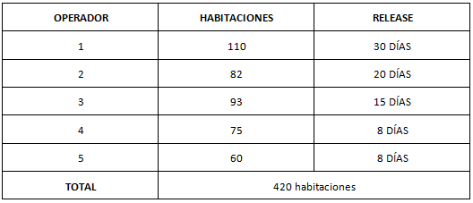

En el momento en que el operador acude a los hoteleros de una zona determinada, lo hace deseando encontrar un número de camas suficiente para cubrir las posibilidades reales de contratación y de ocupación que tiene en los medios de transporte. Por ejemplo, no sería aconsejable para un Operador Nacional contratar en una isla delterritorio español un contingente de 3.500 camas diarias cuando únicamente es capaz de trasladar a esa misma isla un total de 3.000 plazas semanales, ya que con una estancia media de 6 a8 noches por parte de los viajeros, siempre le restaría un elevado volumen de plazas aéreas sin cubrir.
El hotelero pactará con el operador diversas formas de contratación y venta que se van a considerar a continuación. Las fórmulas que se estudiarán son:
LA CONTRATACIÓN DE CUPOS Y PERIODOS DE “RELEASE”
Los cupos, contingentes o “allotements” son el conjunto de plazas a contratar. Se utilizarán, en este caso, y como se ha visto, las habitaciones dobles como punto de partida para la contratación, aunque es siempre aconsejable la existencia de un pequeño cupo, en torno a un 10 % de plazas en habitaciones individuales.
En cuanto al RELEASE, podemos definirlo como "el periodo de tiempo determinado antes de la fecha de inicio de la prestación del servicio, y durante el cual los cupos serán mantenidos vigentes por los hoteleros en favor de los programadores". Cuando se habla de un release de 30 días se hace constar que 30 días antes de las fechas previstas para la ocupación, las habitaciones deben ser comunicadas al hotelero y asignados los nombres de sus titulares. De no ser así, los cupos deben ser devueltos al hotel.
La fecha límite del release recibe el nombre de DEAD LINE, lo que pasa por suponer un punto de desencuentro entre hoteles y operadores. El hotelero tratará de hacerlo lo más largo posible, mientras que el operador pretende que sea corto. Esta situación abre camino a la actual situación del mercado en que proliferan los viajes LAST MINUTE, que aprovechan la devolución de cupos o la proximidad del “dead line”, lo que supone una urgente necesidad de venta.
Figura 1. Ejemplo de aplicación del periodo de "Release". Emilio Alonso Álvarez(CC0)
LA PROVOCACIÓN DEL OVERBOOKING
El “overbooking” será objeto de posterior estudio. Este término se emplea para designar la situación de situación de exceso de reservas con las que el establecimiento no puede cumplir. En la situación de overbooking controlado, se realiza una contratación por encima de las plazas disponibles, tratando de ejercer ese control desde la combinación de cupos y periodos de release. Este es un fenómeno bastante común en establecimientos de destinos como las islas, donde el poder y el número de los operadores son muy elevados.
A continuación se expone un ejemplo de overbooking controlado de un hotel de 400 habitaciones, contratadas todas ellas con operadores turísticos:

Cuadro 1. Overbooking controlado. Emilio Alonso Álvarez
En este caso, se conoce como overbooking controlado porque el hotel conocerá de antemano el grado de realización de cada uno de los cupos contratados. Ha contratado un 5 % de más, lo que supone 20 habitaciones. Los operadores irán entregando cupos desde 30 días antes de la entrada de los clientes. Cualquier habitación sobrante descargará el overbooking de los cupos de entrega última. En caso de que no haya devolución de cupos, siempre podrá negociar con los operadores de release más cortos, aunque sea mediante cesiones diversas.
EL FREEBOOKING O FREESALE
Significa venta libre o venta abierta. Esta situación solamente se puede dar en supuestos de plena confianza entre operador y hotel. El funcionamiento de este sistema implica la necesidad de que ambos pacten un sistema de entrega de plazas reservadas, algo que puede llegar a ser, incluso, de día en día. Este conocimiento implicará la posibilidad de que sea ordenada la total paralización de las ventas, suspendiéndose las mismas en un momento determinado, o que ambas partes acuerden un plazo, similar al release, para paralizar sin aviso previo cualquier venta.
Este sistema es tradicional en algunas tarifas como los bonos de fin de semana, especialmente, desde que algunos de ellos han invadido periodos de semana.
Por ejemplo, un hotel de ciudad puede acordar con un proveedor una situación contractual como ésta:
De lunes a jueves (ambos inclusive). Cupo de 10 habitaciones diarias con release de 7 días.
De viernes a domingo (ambos inclusive). Venta libre.
LA VENTA “ON REQUEST”
Su significado es “venta bajo petición”. Significa que el operador dispondrá de tarifa, que será más o menos competitiva pero, en cualquier caso, debe confirmar cada una de sus ventas, al no disponer de cupos. Puede ser por varias razones: porque se haya superado el periodo de release, porque haya completado su cupo o, sencillamente, porque no se pactó la existencia de cupo alguno.